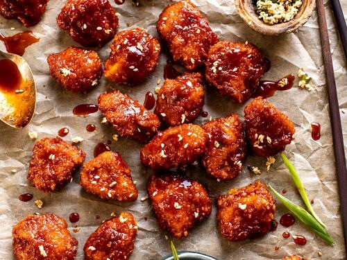

Fried Chicken

Also, Everyone's Favorit
Similar to the pizza storyt, for a long time with the kids
chicken nuggets were the go to if it wasn't pizza rolls
or pizza of some kind. Over time I figured out how to make
my own chicken nuggets, chunking up chicken breasts into
nugget sized portions and breading them and frying them
myself. This way I was sure what was in them and, they
are just better.
Ingreadients
- Chicken Breast
- Milk
- Flour
- Eggs
- Bread Crumbs
Directions
- Mix together the milk and flour to thicken.
- Cut the chicken breast up into 1.5 inch cubes.
- Let the chicken breast cubes rest in the milk and
flour mix, season to taste.
- In a large mixing bowl, place 4-5 chicken chunks
in with the bread crumbs and toss until covered.
You should be able to pick them out with your hands and
not have a mess on your fingers.
- Start the oil heating in a shallow frying pan while
finishing breading the chicken and allow the chicken to rest
while the oil heats.
- Fry the chicken to a darkish golden brown, give them
space enough for the oil to bubble around them, not touching.
- Season afterwards.